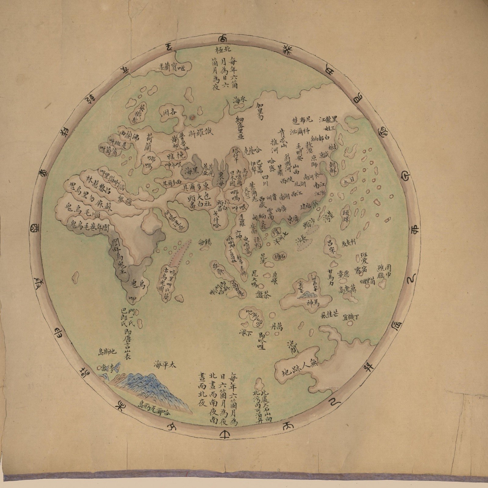
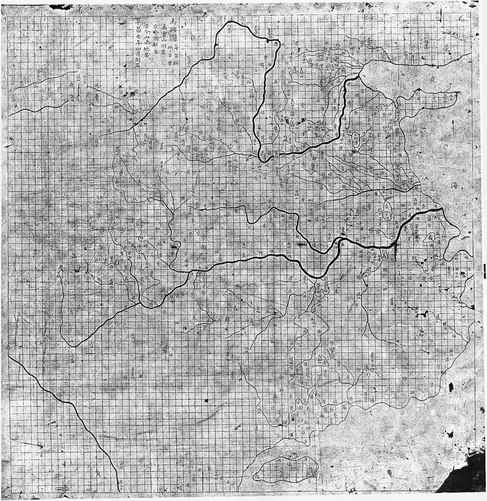
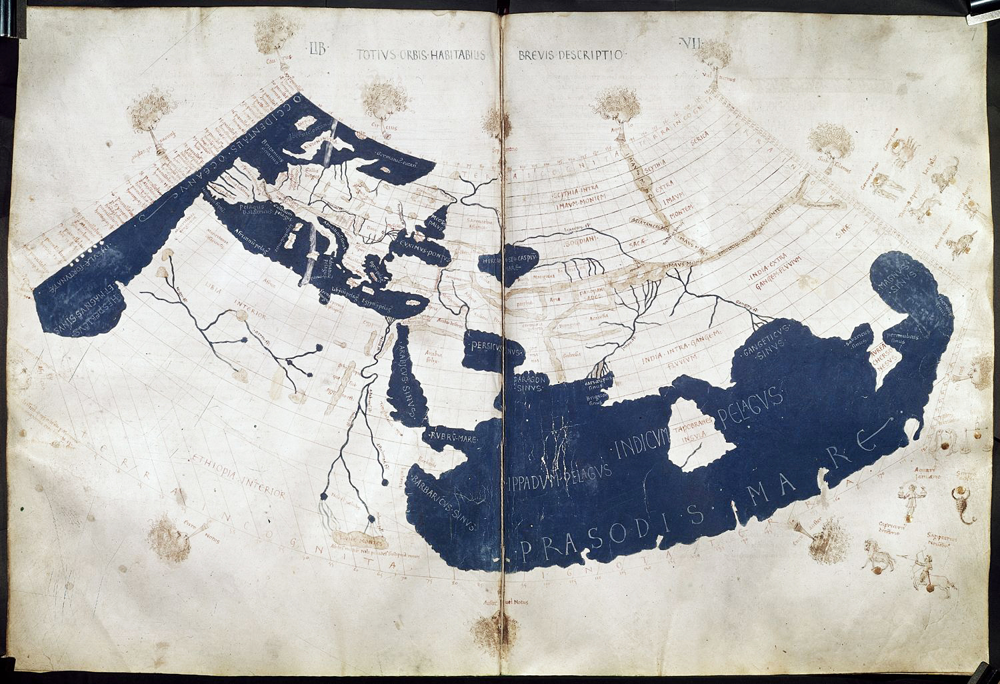
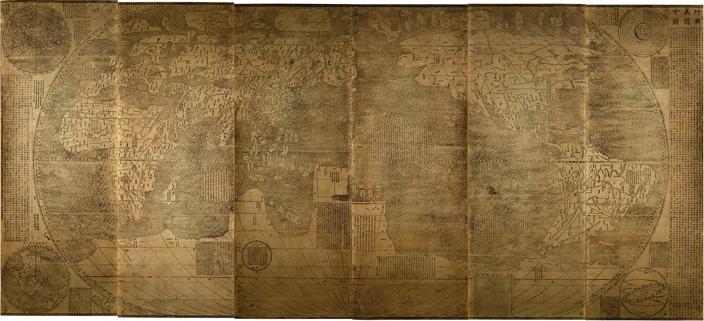
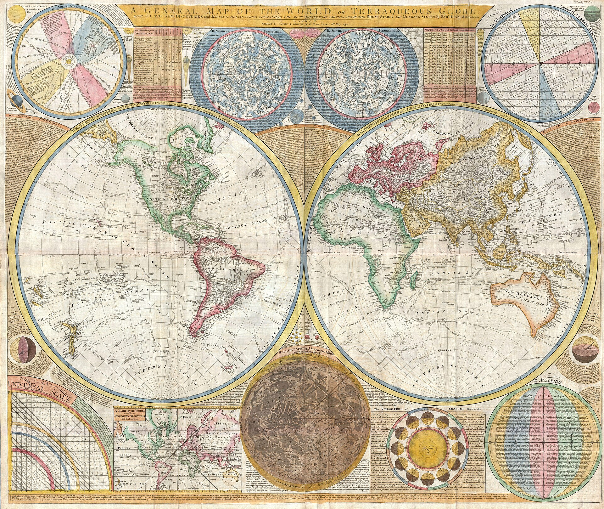

海疆洋界形势全图 · 卷首
「1799年乾隆世界地图」
原件找到了


① 两图乍看不一样，但细看线条完全一致——同一幅地图，网传版只是翻拍时拉高了饱和度
② 「1799年」是误标：原件断代为1787–1801（乾隆五十二年–嘉庆五年）
③ 它是《海疆洋界形势全图》卷首的《环海全图》，全卷另有七省沿海、琼州、澎湖、台湾、台湾后山五幅，感兴趣可以在附件中打包下载。
网传图里中国被涂成橙黄，原件其实是素纸色加红点——那张流传甚广的「World Map according to China in 1799」，其实是一张被调过色的翻拍照片，但确实更清楚了
图源 · 美国国会图书馆 gm71005021 共 6 页
Reddit 热评 · 吐槽组
外国网友的吐槽，倒很有意思
「第一反应：哇还挺准的。然后我看到了年份」
I thought wow that is pretty accurate and then I looked at the date
「他们连日本都没画对」
They didn't even get Japan right
「他们连中国都没画对」
They didn't even get China right
「像在亚马逊贪便宜买的山寨版世界地图」
When you order the cheap off-brand world map on Amazon
「白令海峡？什么白令海峡？」
Bering Straight? What Bering Straight?
「他们连海的颜色都没画对」
They didn't even get the color of the ocean right
Reddit 热评 · 认真组
不过也有人在认真考据
「我很怀疑这就是当时中国最好的世界地图」
I am rather skeptical that "China" legitimately had this as the best available world map at the time
「这只是孤例。楼里也有人贴了同时期非常精细的中国地图——别真以为这就是中国当年的最高水平」
Very detailed Chinese maps from the time were shared elsewhere in the thread
「中国近150年前就有欧洲传教士协助绘制的《坤舆万国全图》，楼主这是在误导」
China had the Kunyu Wanguo Quantu nearly 150 years prior. OP is just misleading
「这图是艺术品，不是拿来导航的——就像人类灭绝后，外星人捡到儿童绘本里的地图，以为我们的制图水平很烂」
This map is art, not for navigating
「出自中国，不代表这一幅就是中国地图的好水平」
Just because the map is from China, it doesn't mean this was a particularly good Chinese map
Reddit 热评 · 对照组
也有人好奇
同时代的欧洲地图长什么样
「同时代其他地区（印度、欧洲……）的地图长什么样？对比一定很有意思」
What do maps from other cartographers of that time look like?
「这是英国数学家 Samuel Dunn 更早五年的世界地图（1794）」
Here's Samuel Dunn's map of the world from five years earlier in 1794
「18世纪末早已进入近代，除了两极，地图精度理应接近今天」
Late 1700s is well into the modern era
「跟1800年的欧洲地图比，这张图烂得可笑，像早了500年的东西」
Compared to European maps in 1800 this map is comically bad
「这细节水平，在欧洲是1500年以前的」
This is pre-1500s detail for European maps
X 讨论 · 另一条战线
X 上也有这个帖子
「完全无视了当时已被发现并殖民的美洲」
Completely ignoring the by-then discovered and settled Americas
「整体算是相当准了，但为什么冈比亚被画成大海湾而不是河」
Overall impressively accurate but why do they think Gambia is a big bay instead of a river
「那个时代的地图来说相当准了！！」
Fairly accurate for that time period!!
「1602年的中国世界地图」有网友贴出《坤舆万国全图》对比
「别被误导：1602年那幅是耶稣会传教士利玛窦画的，不是中国制图师」
Don't be misled — it was created by the Jesuit missionary Matteo Ricci
其实不怪作者——这本来就是一幅东半球图，全卷画的是大清海疆，美洲不在视野内
评论区提到的更多地图
从1137到1794，帖子中提到一些地图



